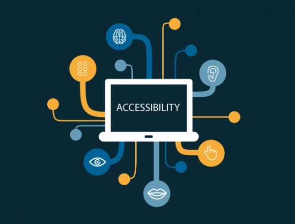

A practical way to move from isolated fixes to sustained accessibility maturity.

An effective accessibility roadmap begins with understanding current state. Audit critical user journeys, identify legal and policy obligations, and map known barriers by severity. Separate urgent blockers from long-term structural improvements. A clear baseline prevents teams from confusing activity with progress.
Accessibility cannot sit with one specialist. Product managers prioritize and schedule work, designers create inclusive patterns, engineers implement semantic and interactive behavior, QA validates outcomes, and content teams maintain clarity. Assign explicit owners for each domain and define escalation paths for critical accessibility defects.
Use a prioritization model that weighs task criticality, affected audience size, and severity of barrier. Fixes that unblock account access, payments, education, or safety information should move first. This approach keeps roadmaps grounded in real human impact rather than only in technical convenience or visibility.
Track metrics that reflect user outcomes: task completion rates for assistive-tech scenarios, accessibility defect aging, time-to-fix for severe issues, and coverage of automated and manual checks. Pair quantitative metrics with qualitative research feedback. Metrics should drive decisions, not just dashboards.
Roadmaps should evolve with product changes, new standards, and user feedback. Bake accessibility requirements into design systems, release checklists, and procurement practices. Celebrate improvements, but also document regressions transparently. Long-term success comes from iterative governance, not one milestone release.
Accessible products are built when design, engineering, content, and research teams treat inclusion as a shared responsibility from day one.